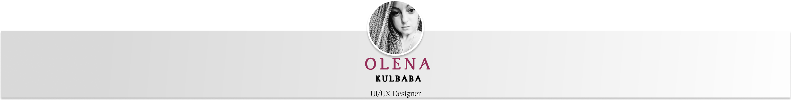
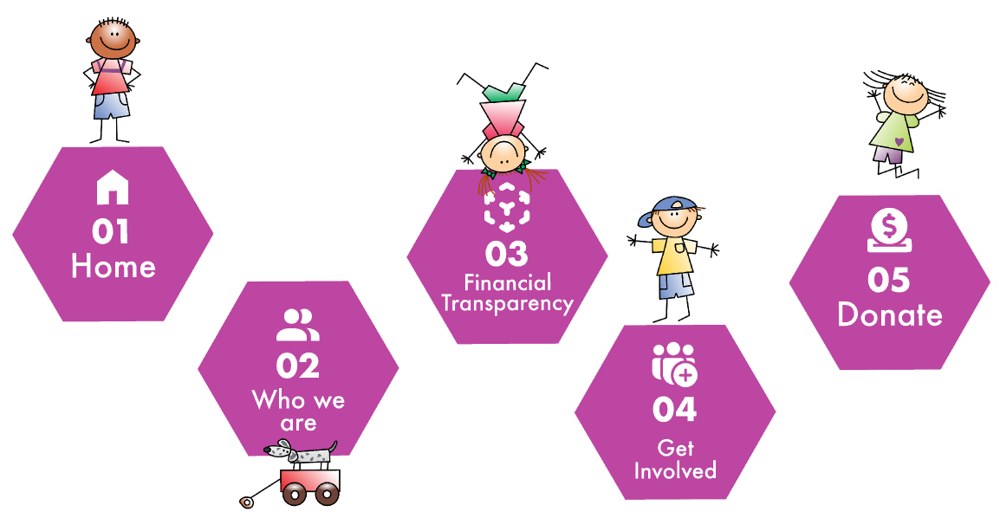
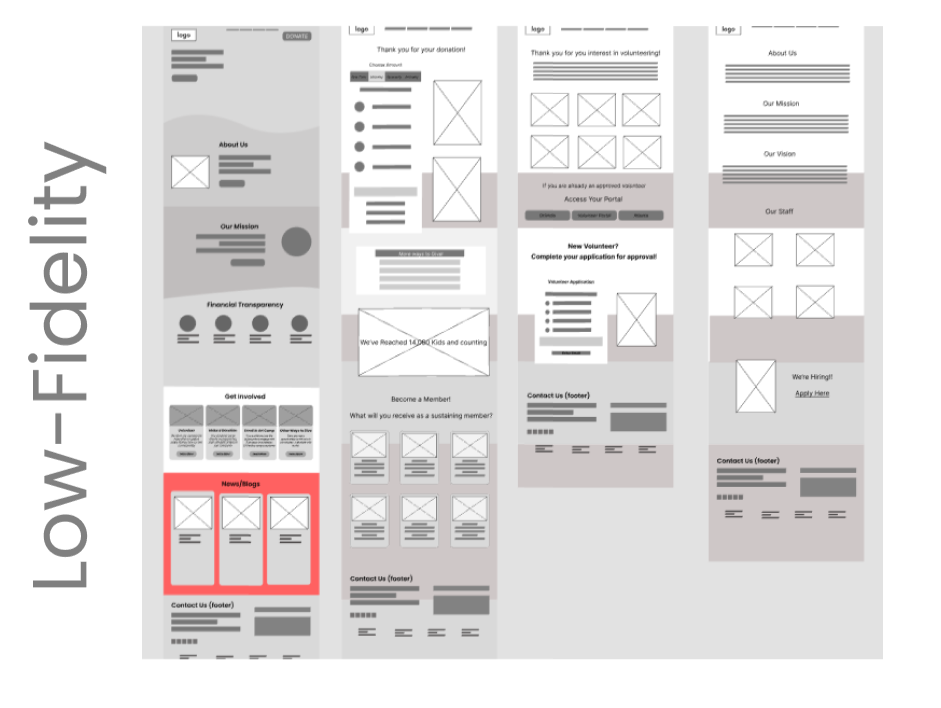

Drawchange.org
Drawchange.org
non profit redesign


Our group began research by creating a survey of six questions which received eighteen responses. We continued by conducting seven user interviews to gain more insight. We chose to interview people who prioritized charity and giving back. As a group, we worked together to develop fourteen questions with our three objectives in mind: 1) Collect interviewee demographic information 2) Determine what motivates people to give/volunteer 3) Understand how people engage with nonprofits and volunteer organizations

We used the heuristic analysis and interviews to give us an initial direction for our lo-fi prototype. Our subsequent usability testing uncovered issues with text density, imagery, lack of in-page navigation, and also some micro interaction difficulties. hrough our interviews we discovered that most people value financial transparency when deciding whether or not to work with a non-profit or charity organization. Several people stated that they would like to know where exactly their donations would be going.
We added more CTAs and navigational options to the homepage including a Chat box feature with quick links which made navigation easier. We even added some adorable little characters that mimic the logo.We overhauled the formerly text-heavy subpages and added relevant visuals to make the information less daunting and more easily digestible as well as adding to the overall aesthetic. We still wanted a vibrant and colorful look and feel for the subpages, but we also made sure it wasn’t overwhelming by finding a proper balance between color relationships and white space. We also couldn’t let the fact slide that Drawchange wasn’t mobile responsive so we applied the aforementioned changes into a mobile format; the only difference being the main nav being converted into a hamburger nav in the upper right corner
The new look of the web site was more eye-appealing, easier and more intuitive to naviagate; people could faster find needed information, maximizing chances of making a donations or volunteer, which was our main goal. The trust to the website and organization in general dramasticaly increased since we solve all the pain points of our users- focusing on financial transarancy, making the layout of financial informaion more accesible, comprehensible and easier to find; showing the impact of donation/vounteer work for people better understand the difference they make, feeling more involved, building loyalty to the organization.